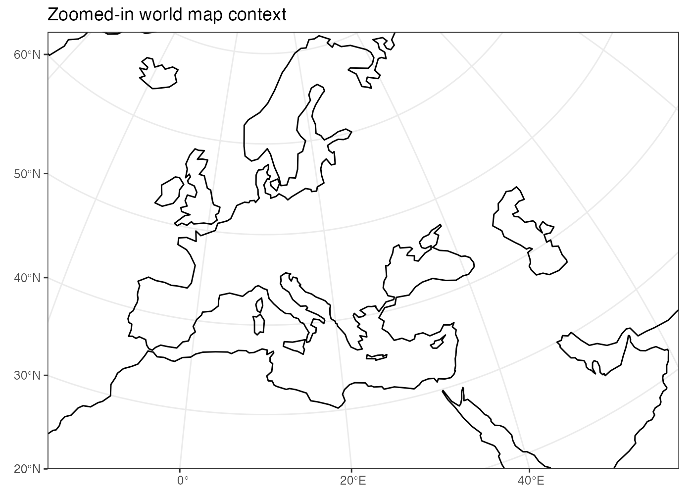
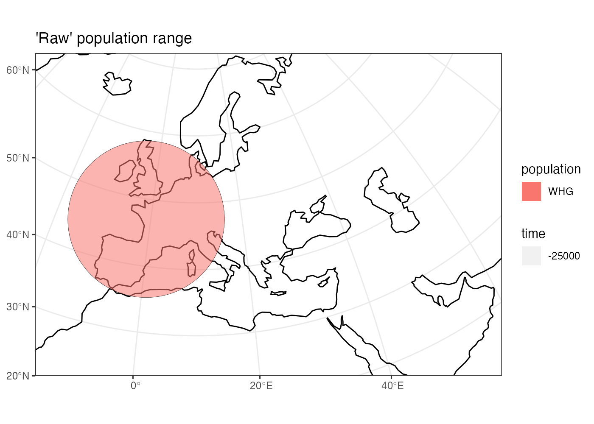
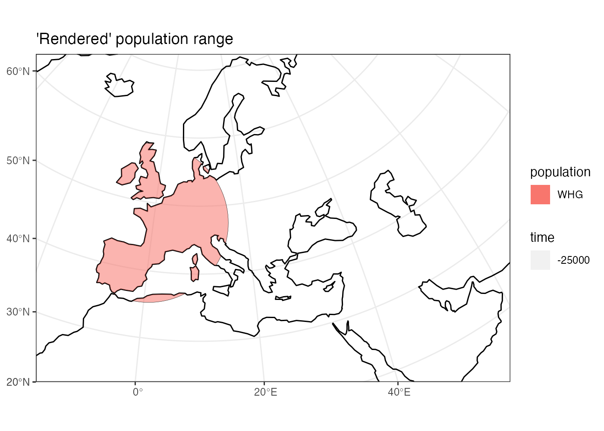
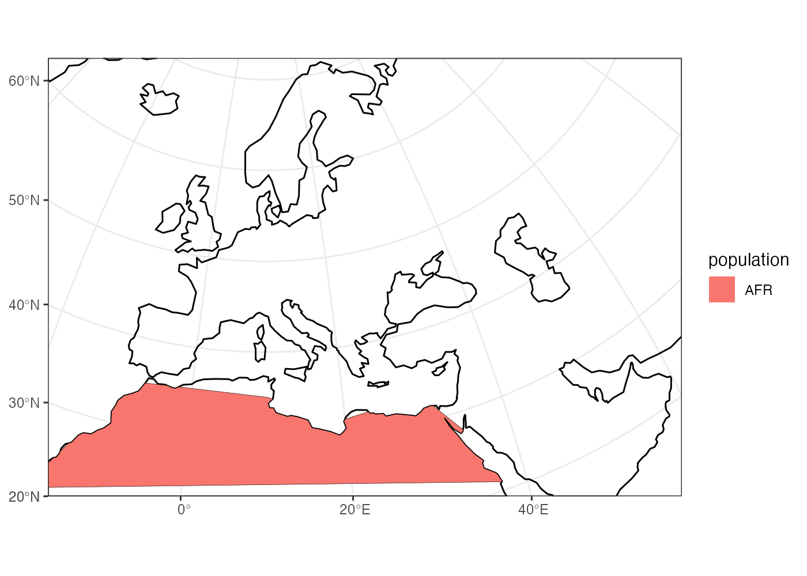
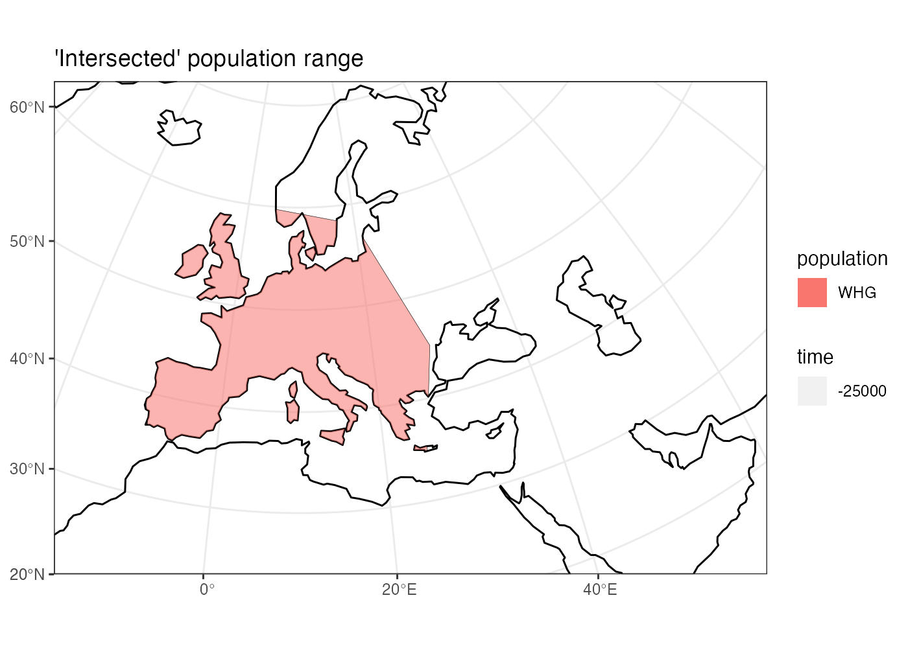
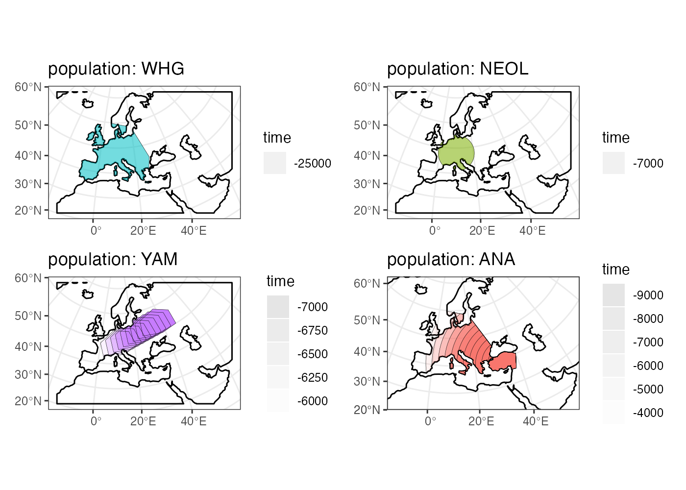

spammr: Introduction and tutorial
tutorial.RmdMotivation
What we want to do is simulate this kind of population history (splits and admixture events):

in the context of this:

to produce this kind of data:

This is possible to do in SLiM using its defineSpatialMap() functionality. However, there is currently no way to define spatial maps programmatically, let alone build spatio-temporal models which include population splits, admixture, migration, and expansion. The package spammr is designed to do exactly this, and feed the generated spatial maps into a dedicated back-end SLiM script.
Philosophy
Geospatial analysis is a deep and complex topic, with many dozen libraries and programs designed to deal with the annoying fact that the Earth is a sphere but we often have no other choice but to plot things (and simulate things in our case!) on a two-dimensional plane.
Luckily, most of the technical issues with Coordinate Reference Systems, transformations between them and manipulation of geometric objects are pretty much solved now. Unfortunately, dealing with these issues in practice is quite challenging and requires non-trivial amount of domain expertise. Programming even a simple task in this context also requires a lot of code and there are no tools available for programming population genetic simulations which are explicitly spatial in nature.
This R package is designed to provide a collection of primitives (a Domain Specific Language of sorts) for encoding migration and spatial boundaries of populations across space and time without having to explicitly deal with many of the challenges inherent to geospatial analyses.
Another goal is to make these spatio-temporal models fully reproducible, easy to write and debug by inspecting each step of the configuration visually, and finally to allow automated feeding of defined spatial maps into the SLiM population genetics simulation framework.

Installation and setup
First, let’s install the latest version of the package and load it:
devtools::install_github("bodkan/spammr")Now we can load it with other R package dependencies:
#library(spammr)
devtools::load_all("~/projects/spammr")
#> ℹ Loading spammrDefining the overall world map
Before we do anything else, we need to define a section of the map of the world which will provide context for all downstream spatio-temporal manipulation of population ranges.
In principle, any source of geospatial data which can be manipulated using the simple features (sf) infrastructure could be used. For now the spammr package implicitly uses the Natural Earth project data (in it’s vectorizes form!), which it internally loads using the rnaturalearth interface.
The first function we will look at is world_map(), which will load the map of the entire world in a vectorized format and zoom in (in fact, crop) to a specified section of the world.
Note that in the call below, we specify the coordinates of the zoom in a geographical Coordinate Reference System (CRS), i.e. longitude/latitude), but we also specified that we want to perform all the downstream manipulation of the spatial population maps in a projected CRS (Lambert Azimuthal Equal-Area projection). This is more appropriate for representing a wider European continent used in this tutorial. Of course, different CRS projection could be used based on which part of the world we want to simulate.
This is the current approach of spammr: let the user specify everything in an easy to understand longitude/latitude geographical CRS. However, in case it is necessary, the internal data structures and the final exported spatial maps can be internally handled in a realistic projected CRS which is better for ensuring undistorted distances and proportions.
world <- world_map(
lon_range = c(-15, 60), # min-max longitude
lat_range = c(20, 65), # min-max latitude
crs = "EPSG:3035" # real projected CRS used internally
)
#> OGR data source with driver: ESRI Shapefile
#> Source: "/private/var/folders/hr/_t1b0f5n7c76yrfsg8yk9l100000gn/T/RtmpM0zqDj", layer: "ne_110m_land"
#> with 127 features
#> It has 3 fieldsInternally, the world object is a normal sf class object without additional components. This is unlike other spammr object described below, which are also sf objects but which carry additional internal components.
Note that the summary of the object says “projected CRS: ETRS89-extended / LAEA Europe”. This means that the world map has indeed been transformed in the projected CRS we specified above.
world
#> spammr 'world' object
#> ---------------------
#> projected CRS: ETRS89-extended / LAEA EuropePlotting geographical features and population ranges
The spammr package implements its own generic method called plot(), which overrides the default plot() function used for simple features sf objects.
We do this in order to make it easier and more convenient to iteratively build more complex models. The function can smartly decide based given input arguments, what is the right way to present the data for the user which helps to define models more quickly without relying on the lower-level mechanisms of the sf package.
More on that below, but here we will just plot the world context we just created:
plot(world, title = "Zoomed-in world map context")
Defining smaller geographic regions
In addition to the overall spatial map context, we can also define smaller geographic boundaries. This is mostly useful whenever we want to restrict a population movement (such as spatial population expansion) to a smaller region of the map that has some intuitive geographic meaning (i.e. Anatolia, West Eurasia, etc.).
europe_anatolia <- region(
"Western Europe & Anatolia",
world,
coords = list(
c(-10, 35), c(-5, 35), c(10, 38), c(20, 35), c(38, 35),
c(40, 40), c(30, 45), c(20, 58), c(-5, 60), c(-15, 50)
)
)
europe <- region(
"Western Europe",
world,
coords = list(
c(-8, 35), c(-5, 36), c(10, 38), c(20, 35), c(25, 35),
c(28, 45), c(20, 58), c(-5, 60), c(-15, 50)
)
)
anatolia <- region(
"Anatolia",
world,
coords = list(
c(28, 35), c(40, 35),
c(42, 40), c(30, 43), c(27, 40), c(25, 38)
)
)Again, the object returned by the region() function is actually a normal sf object, but carrying some additional annotation such as the name of the region (here “Anatolia”):
anatolia
#> spammr 'region' object
#> ----------------------
#> projected CRS: ETRS89-extended / LAEA EuropeHowever, the object also carries additional class annotations for the purpose of internal spammr machinery:
class(anatolia)
#> [1] "spammr" "spammr_region" "sf" "data.frame"Furthermore, note that in all region() calls we specified the world object defined at the very beginning. This object is added as a hidden attribute to each spammr object and represents the context for all geospatial transformations, expansions, and plotting.
Again, we can use the generic plot() function to plot both geographic regions in the context of the defined section of the world map:
plot(europe, anatolia, title = "Geographic regions")
Note that the world object is no longer explicitly specified. It is not needed, because each other class of objects provided to the plot() function must carry it as a “world” attribute. In fact, each such object must carry the same world context - spammr complains whenever this is not the case.
We can check that the component is really there, although hidden, and indeed is the same as the world object we created at the beginning:
Defining spatial population boundaries
Circular population ranges
The whole point of spammr is formalizing the specification of spatial population boundaries and their changes over time. The core function for this is population(), which accepts the population name and the time in which we want to enforce that population’s boundary, as well as the world object described above. Finally, this function accepts a center and radius arguments (in case of circular population boundaries):
ooa <- population(
"OOA",
time = 55000,
parent = "ancestor",
Ne = 2000,
world,
center = c(65, 45), radius = 500
)
whg <- population(
name = "WHG", # population identifier
time = 25000, # time in years ago
Ne = 4000,
parent = ooa,
world, # world map 'context' for the population
center = c(-1, 47), # (longitude, latitude)
radius = 1300 # radius of a circle in km
)If we call the plot() function on the returned object, we have the option to either plot the population range in its “raw” form or in its interected form, in which case the raw boundary is intersected with spatial landscape (removing large bodies of water, etc.).
The intersected form is what is ultimately exported in a serialized form (see below) to be loaded as a spatial map into SLiM. This is why the plot() function renders population ranges by default.
plot(whg, intersect = F, title = "'Raw' population range")
plot(whg, title = "'Intersected' population range")
Polygon population ranges
Alternatively, it is also possible to define finer population boundaries using a polygon geometry object (coords= argument) or a region object created by the region() function above. Again, as a reminder, note that all coordinates are described in the context of the geographic CRS.
whg <- population(
name = "WHG", # population identifier
time = 25000, # time in years ago
Ne = 4000,
parent = ooa,
world, # world map 'context' for the population
region = europe # geographic region object
)
plot(whg, intersect = F, title = "'Raw' population range")
plot(whg, title = "'Intersected' population range")
Let’s create more populations and their boundaries:
ana <- population(
name = "ANA", time = 9000, Ne = 8000, parent = ooa,
world,center = c(34, 38), radius = 700,
region = anatolia
)
yam <- population(
name = "YAM", time = 7000, Ne = 6000, parent = ooa,
world,
coords = list( # polygon specified using coordinates of vertices
c(26, 50), c(38, 49), c(48, 50),
c(48, 56), c(38, 59), c(26, 56)
)
)
neol <- population(
name= "NEOL", time = 7000, Ne = 10000, parent = whg,
world,center = c(10, 48), radius = 800
)Spatial population expansion
We can simulate the expanding range of a population using the function expand(), which accepts a parameter specifying by how many kilometers should the boundary expand (the by argument), how long should the expansion take (the duration argument) and how many intermediate spatial map snapshots should be exported representing this expansion (the snapshots argument).
For instance, let’s represent the expansion of Anatolian farmers (this uses an optional parameter region which restricts the expansion only to Europe, instead of all around Anatolia).
plot(ana, title = "Anatolian farmer population")
ana <- ana %>%
expand(
by = 2500,
duration = 5000,
snapshots = 10,
region = europe_anatolia
)Note that in principle, you could specify the entire spatio-temporal history of a population in a single pipeline using the pipe operator %>%.
We can inspect the object returned by the expand() function and see that it contains he spatial maps (“snapshots”) of the expansion process across time:
ana
#> spammr 'population' object
#> --------------------------
#> name: ANA
#> Ne: 8000
#> split from: OOA
#> split time: 9000
#> spatial snapshots at: 9000, 8500, 8000, 7500, 7000, 6500, 6000, 5500, 5000, 4500, 4000
#>
#> projected CRS: ETRS89-extended / LAEA EuropeWe can (and should) check the results visually:
plot(ana, title = "Anatolian expansion into Europe")To visually see what is really going on behind the scene, we can plot the raw form of the expansion:
plot(ana, title = "Anatolian expansion into Europe (not intersected)", intersect = F)
Population migration across a landscape
To describe a a directional population movement, we can use the function migrate(). This accepts the coordinates of the destination points along the way (trajectory), the duration of the migration, and the number of individual spatial maps to save during export (snapshots, same as the expand() function above).
plot(yam, title = "Yamnaya range")
yam <- yam %>%
migrate(
trajectory = c(10, 48), # migrate to this point
duration = 1000, # how many years does the migration take?
snapshots = 8 # how many intermediate maps should be saved?
)We can inspect the object returned by the migrate() function and see that it contains not just the first YAM population range at 7000 years ago, but also the ranges of the intermediate locations:
yam
#> spammr 'population' object
#> --------------------------
#> name: YAM
#> Ne: 6000
#> split from: OOA
#> split time: 7000
#> spatial snapshots at: 7000, 6875, 6750, 6625, 6500, 6375, 6250, 6125, 6000
#>
#> projected CRS: ETRS89-extended / LAEA EuropeChecking the result visually again, we see:
plot(yam, title = "Intermediate migration maps")
The migration trajectory can be much more complicated, however. Imagine this:
population(
"nomadic population", time = 10000, Ne = 1000,
parent = ooa,
world,
center = c(40, 60), radius = 350
) %>%
migrate(
trajectory = list(c(50, 50), c(50, 40), c(40, 30), c(20, 30),
c(0, 40), c(0, 50), c(20, 60), c(40, 60)),
duration = 100,
snapshots = 50
) %>%
plot(intersect = F, title = "Migration along a trajectory")
Plotting multiple spammr objects
In addition to plotting individual population ranges, the generic function plot() can handle a combination of population ranges, and can also partition them in individual facets. This is very useful for visual inspection of the specified model and for looking for potential issues before the export of individual spatio-temporal maps.
plot(ooa, whg, neol, yam, ana)
Rendering and export
OK, so far so good. We have nice and fancy way to plot colorful shapes on a map, representing spatio-temporal population dynamics.
The ultimate goal of spammr is a formal specification of spatio-temporal population boundaries for the purpose of forward simulations in SLiM. The crucial piece of machinery which connects the spammr R package with SLiM is an Eidos function called defineSpatialMap() which, among other parameters, accepts a two-dimensional matrix (essentially, a raster image) describing a spatial simulation landscape. See SLiM manual for more information.
TODO: write a short tutorial on the SLiM side of the problem too.
How do we link the visual (still vectorized!) spatial population ranges shown above to SLiM? We need to export them in a rasterized form as greyscale bitmaps The key is a spammr function render()`.
Without any arguments, the function simply generates a (named) list of ggplot2 objects:
Each of these objects contains a black-and-white rasterized version of the population range at a particular snapshot in time. Let’s plot one of them (representing the spatial range of the Anatolian farmers 5,500 thousand years ago - already at the stage in which they migrated to central Europe):
maps[["ANA_5500"]]
#> NULLAnd here’s the whole series:
cowplot::plot_grid(plotlist = maps)
#> Warning in as_grob.default(plot): Cannot convert object of class list into a
#> grob.
#> Warning in as_grob.default(plot): Cannot convert object of class list into a
#> grob.
#> Warning in as_grob.default(plot): Cannot convert object of class list into a
#> grob.
#> Warning in as_grob.default(plot): Cannot convert object of class list into a
#> grob.
#> Warning in as_grob.default(plot): Cannot convert object of class list into a
#> grob.
#> Warning in as_grob.default(plot): Cannot convert object of class list into a
#> grob.
#> Warning in as_grob.default(plot): Cannot convert object of class list into a
#> grob.
#> Warning in as_grob.default(plot): Cannot convert object of class list into a
#> grob.
#> Warning in as_grob.default(plot): Cannot convert object of class list into a
#> grob.
#> Warning in as_grob.default(plot): Cannot convert object of class list into a
#> grob.
#> Warning in as_grob.default(plot): Cannot convert object of class list into a
#> grob.
#> Warning in as_grob.default(plot): Cannot convert object of class list into a
#> grob.
#> Warning in as_grob.default(plot): Cannot convert object of class list into a
#> grob.
#> Warning in as_grob.default(plot): Cannot convert object of class list into a
#> grob.
#> Warning in as_grob.default(plot): Cannot convert object of class list into a
#> grob.
#> Warning in as_grob.default(plot): Cannot convert object of class list into a
#> grob.
#> Warning in as_grob.default(plot): Cannot convert object of class list into a
#> grob.
#> Warning in as_grob.default(plot): Cannot convert object of class list into a
#> grob.
#> Warning in as_grob.default(plot): Cannot convert object of class list into a
#> grob.
#> Warning in as_grob.default(plot): Cannot convert object of class list into a
#> grob.
#> Warning in as_grob.default(plot): Cannot convert object of class list into a
#> grob.
#> Warning in as_grob.default(plot): Cannot convert object of class list into a
#> grob.
This is what will be ultimately loaded into SLiM, using our back-end SLiM script which will swap different spatial maps in and out, as needed throughout the course of the simulation.
TODO and open questions
1. How to tie the visual configuration to an explicit admixture graph?
I.e., a population A splitting from a population B at a time t, with a Ne of X.
Should this be represented as columns in the annotation data frame in each sf object?
Should this be encoded in a separate table?
2. How to validate the entire model?
Currently, the “compilation” procedure dumps the spatial maps in a given format on disk. Presumably (having solved item 1. above), we would also save the table of split times, as well as the table of admixture edges and a table of spatial maps.
The compilation process should validate that the configured visual/split/admixture model is meaningful:
Population migration maps should overlap to a reasonable degree? I.e. there should be a sufficient continuity/overlap between consecutive spatial maps over time.
The overlap model should form a directed acyclic graph - there should be no “unreachable” population states.
3. How to actually implement admixture in a spatial context?
For instance, how to enforce that a population C contributes 60% of its ancestry to a population D? What sort of meaning does it actually have in the context of spatial maps and how they will be utilized by the back-end SLiM script?
4. At which stage should the the user specify SLiM bits relevant to their work?
There’s a clear conflict between every SLiM script being tailored to each specific use-case and the fact that I want to make things as reproducible and automatic as possible.
I have a nice generic SLiM back-end that slurps in the spatial maps, defines population splits and migrations… but that’s just the demographic part. Should the user modify that script in SLiM GUI (which is awesome and a big reason to use SLiM in the first place)? This hurts the reproducibility, but I can’t reasonably implement an R interface to every possible SLiM use-case.